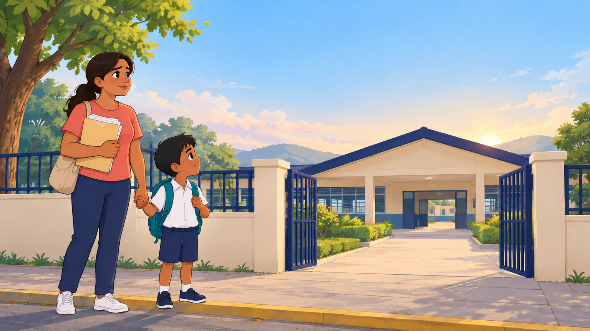

1
0:00 – 0:14
Doña Marta llega

- Imagen y acción
- Febrero. Doña Marta, con Kevin (7) de la mano, frente a una escuela. Carpeta con fotocopias. Reloj de pared: 6:40.
- Voz en off
- Gaby: Doña Marta trabaja de seis a dos. Hoy pidió permiso.
Gaby: Preguntó a tres vecinas antes de atreverse a venir. - Texto en pantalla
- Sin texto.